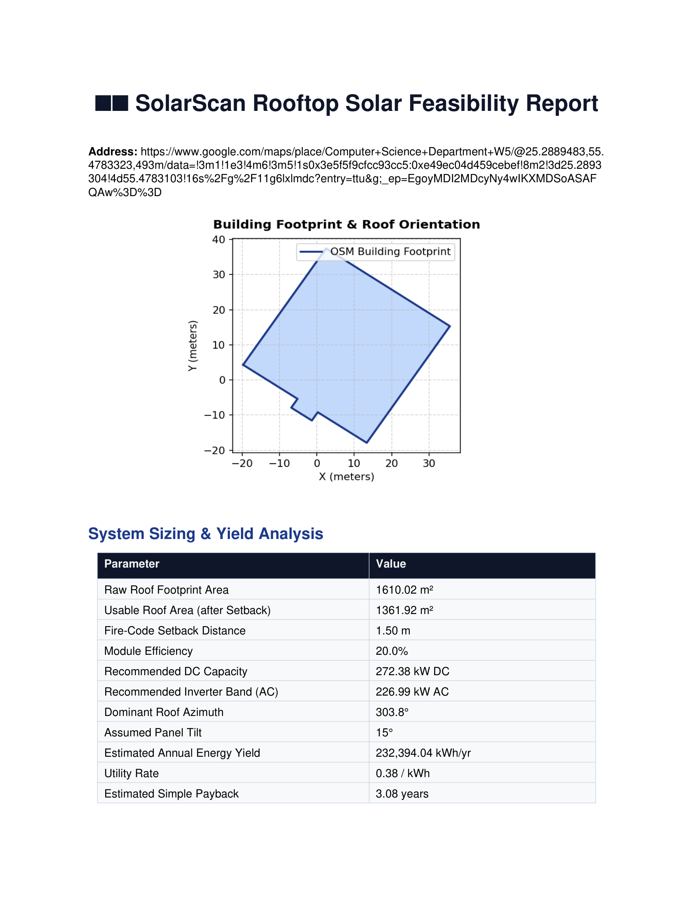
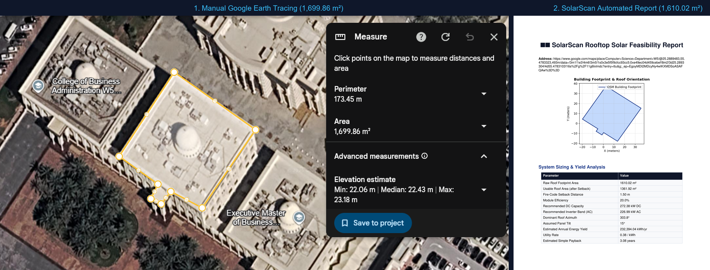

Solar pre-sales
Qualify one roof faster
Start from a location and produce a consistent first-pass capacity, yield, and payback summary.
- Address or map-link input
- Configurable tariff and assumptions
- PDF for internal review
Open Python · OSM footprints · Local PDF
SolarScan takes an address, Google Maps link, or coordinates and produces an OpenStreetMap-based roof estimate, DC/AC sizing, annual yield, simple payback, and a reviewable PDF.

Pick your outcome
SolarScan is for early screening: enough structure to compare roofs and create a conversation, without pretending an OSM polygon is a site survey.
Solar pre-sales
Start from a location and produce a consistent first-pass capacity, yield, and payback summary.
Portfolio triage
Run the same local workflow across multiple addresses before choosing where manual effort goes.
Engineering review
Keep geometry, sizing, loss, tariff, and payback inputs visible instead of hiding them behind a score.
From pin to PDF
Each stage maps to code in the repository, so the estimate can be reviewed and changed.
Parse an address, Google Maps URL, or explicit latitude and longitude.
Query nearby OSM buildings and calculate footprint area, perimeter, and dominant edge.
Apply the configured setback approximation, module efficiency, losses, and tariff.
Save the footprint diagram and feasibility summary as a local PDF.
Interactive model
This browser demo replays SolarScan’s current sizing equations. It does not query OpenStreetMap or replace the Python report workflow.
One case, labeled as one case
For University of Sharjah W5, the retrieved OSM footprint area is 94.7% of one manual Google Earth trace. That is a useful spot check, not a benchmark across roofs.

W5 comparison
Interpretation: this comparison checks one footprint’s area. It does not validate shading, structural capacity, code compliance, module layout, irradiance, cost, or energy production.
The trust gate
SolarScan is valuable when it helps you decide what deserves a closer look. It should never turn a public map polygon into a bankable design claim.
No site-survey claim. OSM coverage and geometry vary by location.
No code-compliance claim. The setback is an area approximation, not a code-aware layout.
No shading claim. Trees, neighboring structures, roof pitch, and 3D obstructions are not modeled.
No bankable yield claim. Default sun-hours, losses, cost, and tariff must be replaced for real decisions.
Five-minute path
Choose Python for an inspectable development setup or the packaged Windows installer for a local command-line app.
git clone https://github.com/IamOumarIbrahim/SolarScan.git
cd SolarScan
python -m pip install -e .
solarscan scan "Computer Science Department W5 Sharjah"34 MB packaged Windows installer · Python not required
Select “Add SolarScan to system PATH” during setup to run solarscan from a new terminal.
Open source · CC0
If SolarScan saves you one round of manual pre-screening, star the repository so the next solar builder can find it.